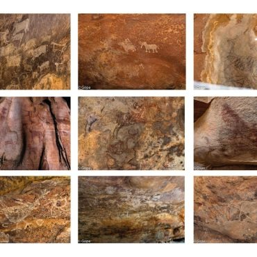

History
he Taj Mahal was commissioned by Mughal Emperor Shah Jahan in 1632 in memory of his wife Mumtaz Mahal, who died during childbirth.
It took around 22 years and over 20,000 workers to complete, with craftsmen from India, Persia, and the Ottoman Empire.
The architecture combines Mughal, Persian, Islamic, and Indian styles. Built entirely from white Makrana marble, it sits along the banks of the Yamuna River in Agra.
Today, it stands as a timeless symbol of love and is a UNESCO World Heritage Site.
Location:Taj Mahal, Dharmapuri, Forest Colony, Tajganj, Agra, Uttar Pradesh 282001
Best Time to Visit
- October to March for pleasant weather
- Sunrise or sunset for stunning views
- Full moon nights for magical moonlit views
Specialty
- One of the Seven Wonders of the World
- White marble changes color with sunlight
- Perfect symmetry and intricate carvings
- Beautiful Persian-style gardens (Charbagh)

Special Food in Agra
- Sweets:
- Petha: A translucent sweet made from ash gourd, available in many flavors (saffron, paan, coconut, etc.).
- Gajak: A crunchy winter sweet made with sesame seeds and jaggery.
- Street Food & Local Dishes::
- Bedai & Jalebi: A spicy lentil-filled puri served with a sweet syrupy jalebi – a classic Agra breakfast
- Kachori: Another popular spicy snack stuffed with lentils or potatoes./li>
- Dalmoth: A crunchy, spicy snack mix – perfect as a souvenir./li>
- Mughlai Cuisine:
- Influenced by the Mughals, the local cuisine is rich and flavorful.
- Must-try dishes: Chicken/Mutton Biryani, Tandoori Chicken, Kebabs, Murg Musallam, Butter Chicken, and Naan
Map Location
History
The Ajanta Caves, located near Aurangabad in Maharashtra, India, are a group of 30 rock-cut Buddhist cave monuments carved between the 2nd century BCE and 6th century CE.
These caves served as monasteries and prayer halls for Buddhist monks. The walls and ceilings are adorned with vibrant frescoes, murals, and sculptures that depict the life of Buddha and various Jataka tales.
The caves were rediscovered in 1819 by a British officer and are now a UNESCO World Heritage Site.
Location:Ajanta Caves View, Aajanta Caves view restaurant, Post, At, Pimpaldari, Balapur, Maharashtra 431117
Best Time to Visit
- November to March is the best time – pleasant weather for sightseeing.
- Sunrise or sunset for stunning views
- Full moon nights for magical moonlit views
Specialty
- Famous for ancient Buddhist paintings and sculptures, some over 2,000 years old.
- The caves are cut into a horseshoe-shaped rock face along the Waghora River.
- Paintings use natural dyes and still retain vibrant colors.
- Showcases Gupta and post-Gupta art – considered masterpieces of Indian heritage.
- A must-visit for lovers of art, history, and architecture.

Special Food Near Ajanta (Aurangabad region):
- Sweets:
- Naan Qalia: A traditional Mughlai dish made of spicy mutton curry and soft naan bread
- Tambda & Pandhra Rassa: Spicy and white curry made from meat, a specialty of the Kolhapuri influence in Maharashtra.
- Pithla Bhakri: A local staple made of spicy gram flour curry served with millet bread.
- Poha & Misal Pav: Popular breakfast and snack items in the region.
- Sweets:
- Jalebi, Sheer Khurma, and Basundi are popular during festivals and feasts.
Map Location
History
The Group of Monuments at Mahabalipuram (also known as Mamallapuram) is a UNESCO World Heritage Site located in Tamil Nadu, India.
These monuments were built during the 7th and 8th centuries by the Paof Agrllava dynasty, especially under King Narasimhavarman I.
The site includes rock-cut caves, monolithic temples, bas-relief sculptures, and structural temples. The most famous ones include the Shore Temple, Arjuna's Penance, Pancha Rathas, and Krishna’s Butterball.
These monuments are known for their ancient Dravidian architecture and stone carving.
Location:Group of Monuments at Hampi, Hampi, Karnataka 583239
Best Time to Visit
- October to March is the best time to visit.
- The weather is pleasant and suitable for sightseeing.
- Avoid the summer months (April–June) due to heat and humidity.
Specialty
- Incredible rock-cut architecture and ancient stone carvings.
- Unique blend of cave temples and open-air bas-reliefs
- Arjuna’s Penance: one of the world’s largest bas-relief sculptures.
- The Shore Temple: beautifully located by the Bay of Bengal.
- UNESCO World Heritage recognition for its historical and artistic value.

Special Food:
- South Indian cuisine dominates the local food scene.
- Must-try dishes: Dosa, Idli, Vada, Sambar, Rasam, Pongal.
- Fresh seafood is also popular due to its coastal location.
- Fresh seafood is also popular due to its coastal location.
Map Location
History
Founded by Mughal Emperor Akbar in 1571 as the new capital of the Mughal Empire.
Built to honor the Sufi saint Salim Chishti, whose blessings Akbar sought for an heir.
The city was abandoned around 1585 due to water shortages and strategic reasons.
Represents a blend of Mughal, Persian, and Indian architectural styles.
Declared a UNESCO World Heritage Site for its historical and architectural significance.
Location:Fatehpur Sikri, Dadupura, Fatehpur Sikri, Uttar Pradesh 283110
Best Time to Visit
- October to March: Pleasant weather, ideal for sightseeing.
- Avoid summer months (April to June) due to extreme heat.
- Winter evenings can be cold, so dress accordingly.
Specialty
- Famous monuments include Buland Darwaza (largest gateway in India), Jama Masjid, Panch Mahal, Diwan-i-Khas (Hall of Private Audience), and the Tomb of Salim Chishti.
- Architectural harmony combining Islamic, Hindu, Jain, and Christian elements.
- Known for its beautiful courtyards, intricate carvings, and red sandstone structures.
- Less crowded compared to Taj Mahal, offering a more peaceful exploration experience.

Special Food in Agra
- Mughlai cuisine is the highlight, famous for rich, flavorful dishes.
- Local specialties include:
- Kebabs (Seekh Kebab, Galouti Kebab),Biryani (aromatic spiced rice with meat),Dal Bukhara (slow-cooked lentils),Phirni (a creamy rice pudding dessert),Shahi Tukda (sweet bread pudding)
Map Location
History:
Ellora Caves, located near Aurangabad in Maharashtra, India, are an extraordinary group of 34 rock-cut temples and monasteries carved between the 6th and 10th centuries CE.
These caves showcase the religious harmony of ancient India, with Buddhist (caves 1–12), Hindu (caves 13–29), and Jain (caves 30–34) monuments all coexisting in one complex.
The caves were built under the patronage of various rulers, including the Rashtrakuta dynasty, known for their support of art and architecture.
The most remarkable cave is the Kailasa Temple (Cave 16), a gigantic monolithic structure carved from a single rock, symbolizing Mount Kailash, the abode of Lord Shiva.
The caves feature intricate carvings, sculptures, and frescoes depicting mythological stories, gods, and everyday life.
The craftsmanship reveals the skills of artisans over several centuries and reflects the evolution of Indian rock-cut architecture.
Location:Ellora Caves, Verul, Maharashtra 431102
Best Time to Visit
- The ideal visiting months are October to March, during the cooler months of autumn and winter.
- Summers can be very hot, with temperatures often exceeding 40°C (104°F).
- Early mornings are best for fewer crowds and comfortable exploration.
Specialty
- Religious Diversity: Ellora uniquely blends three major religions in one site, promoting coexistence and cultural exchange.
- Monolithic Kailasa Temple: One of the largest single-rock excavations globally, considered an architectural marvel.
- Sculptural Details: Detailed carvings of gods, goddesses, animals, and mythical scenes provide rich insight into ancient Indian culture and spirituality.

Special Food:
- When visiting Aurangabad or nearby towns, enjoy authentic Maharashtrian cuisine such as:
- Vada Pav: Popular street food, spicy potato filling in a bun.
- Puran Poli: Sweet flatbread with a filling of jaggery and lentils, often made during festivals.
- Sabudana Khichdi: Light, tasty dish made with tapioca pearls, peanuts, and mild spices, especially eaten during fasting days.
- Bhakri and Thecha: Traditional flatbread with spicy chili chutney, a local favorite.
Map Location
History:
Champaner-Pavagadh Archaeological Park is located near the city of Vadodara in Gujarat, India.
The site has a history spanning over a thousand years, originating from the 8th century when the region was inhabited by various dynasties.
The park reached its peak during the late 15th and early 16th centuries under Sultan Mahmud Begada, who made Champaner his capital.
He fortified the city and built many impressive structures, blending Islamic and Hindu architectural styles.
The site remained significant as a thriving cultural and commercial hub until it was eventually abandoned after the Mughal conquest in the 17th century.
Today, it is a well-preserved archaeological site showcasing forts, mosques, palaces, temples, step wells, and residential complexes.
Location:Champaner-Pavagadh Archaeological Park, Champaner, Gujarat 389360
Best Time to Visit
- The ideal visiting months are October to March due to cooler temperatures (between 15°C to 30°C).
- Summers (April to June) can get extremely hot, and the monsoon season (July to September) brings heavy rains, making travel difficult..
Specialty
- Architectural Blend: The park is famous for its unique combination of Hindu and Islamic architecture, which can be seen in mosques, palaces, and temples.
- Pavagadh Hill: This sacred hill is an important pilgrimage site and offers trekking routes with stunning views of the surrounding plains.
- Historic Monuments: Key attractions include the Jama Masjid, Kevda Masjid, Nagina Masjid, and the fortifications on Pavagadh Hill.
- Natural Beauty: The park lies in a lush, forested area with rich biodiversity, making it attractive for nature lovers and history buffs alike.
- UNESCO World Heritage Site: It was declared a UNESCO World Heritage Site in 2004, recognizing its outstanding universal value.

Special Food:
- When visiting, you can savor delicious local Gujarati cuisine from nearby eateries:
- Khandvi: Thin rolls made of gram flour and yogurt, seasoned with mustard seeds and coconut.
- Dhokla: Steamed fermented batter of rice and chickpeas, a light and fluffy snack.
- Undhiyu: A traditional mixed vegetable curry slow-cooked with spices, often served with puri or roti.
- Fafda-Jalebi: A popular breakfast combo of crunchy chickpea flour snacks with sweet, crispy jalebi.
- Thepla: Thin, soft flatbread made with fenugreek leaves and spices, perfect for travel.
Map Location
History:
Khajuraho, located in Madhya Pradesh, India, is home to one of the most spectacular temple complexes in the world.
Built between 950 and 1050 AD by the Chandela dynasty, these temples were designed as places of worship for Hinduism and Jainism.
The temples are famous for their intricate and beautifully carved sculptures, including many that depict various aspects of life, mythology, and spirituality.
The erotic sculptures symbolize the celebration of love and life, which was a common theme in ancient Indian culture.
Location:Khajuraho, Madhya Pradesh 471606
Best Time to Visit
- October to March – Cool and pleasant weather
- Ideal for sightseeing and outdoor exploration
- February/March – For the famous Khajuraho Dance Festival
- Avoid summer (April to June) – Too hot and dry
- Monsoon (July to September) – Less crowd, greenery around
Specialty
- UNESCO World Heritage Site known for ancient temples
- Famous for erotic sculptures carved in stone
- Unique blend of Hindu and Jain architecture
- Temples display stories from mythology and daily life
- Hosts the Khajuraho Dance Festival every February/March
- Artistic excellence in sandstone carvings
- Represents ancient Indian spirituality, art, and culture.

Special Food:
- When in Khajuraho, indulge in the local flavors of Madhya Pradesh. Some must-try dishes include:
- Bhutte ka Kees: A savory dish made from grated corn cooked with spices and milk.
- Dal Bafla: Similar to dal bati from Rajasthan, it consists of wheat dough balls served with lentils and ghee.
- Poha: Flattened rice with spices and peanuts, popular as a breakfast snack.
- Local sweets like Jalebi and Gulab Jamun are also popular.
Map Location
History:
Agra Fort, also known as the Red Fort of Agra, is a UNESCO World Heritage Site located in Agra, Uttar Pradesh.
Built in 1565 by Emperor Akbar, it served as the main residence of the Mughal emperors until 1638.
The fort witnessed the rule of Akbar, Jahangir, Shah Jahan, and Aurangzeb, making it a key center of power during the Mughal era.
Originally a brick fort held by Rajputs, Akbar rebuilt it with red sandstone. His grandson, Shah Jahan, added beautiful white marble structures, including the Musamman Burj, where he was later imprisoned by his own son, Aurangzeb.
The fort has seen battles, royal dramas, and love stories, all locked within its massive walls.
Location:Agra Fort, Rakabganj, Agra, Uttar Pradesh 282003
Best Time to Visit
- October to March is the best time to visit Agra Fort. The weather is cool and pleasant, ideal for exploring the outdoors.
- Avoid visiting in summer (April to June) as it gets very hot.
- Visiting in the early morning or late afternoon also helps you avoid crowds and enjoy better lighting for photography.
Specialty
- Massive architecture made with red sandstone and marble.
- Houses important structures like:Diwan-i-Aam (Hall of Public Audience)
- Diwan-i-Khas (Hall of Private Audience)
- Sheesh Mahal (Mirror Palace)
- Musamman Burj (where Shah Jahan was held)
- Offers a stunning view of the Taj Mahal from inside the fort.
- A perfect blend of military strength and artistic beauty.
- Rich in Mughal history, architecture, and royal life.

Special Food:
- When visiting Agra Fort, don’t miss out on these local delights:
- Petha – A sweet made from ash gourd, available in many flavors.
- Bedai & Jalebi – A spicy and sweet breakfast combo.
- Dalmoth – A crunchy snack made with lentils and spices.
- Mughlai Cuisine – Try dishes like Chicken Mughlai, Biryani, Korma in nearby restaurants.
Map Location
Rock Shelters of Bhimbetka – Cradle of Human Civilization
The Rock Shelters of Bhimbetka are a fascinating archaeological site located in the Raisen District of Madhya Pradesh, India, about 45 km from Bhopal. Nestled in the foothills of the Vindhya Range, these rock shelters are an open museum of prehistoric art and culture, offering a vivid glimpse into early human life.
History:
AThe Rock Shelters of Bhimbetka, located in Madhya Pradesh, India, hold significant historical importance as they contain one of the earliest traces of human life in the Indian subcontinent.
These natural rock formations served as shelters for prehistoric humans and feature cave paintings that date back over 30,000 years.
Discovered in 1957 by archaeologist V.S. Wakankar, the site provides valuable insights into the lives of early humans, including their hunting practices, rituals, and daily activities.
The paintings, made with natural colors, reflect various periods such as the Paleolithic, Mesolithic, and Chalcolithic ages, showcasing the evolution of human civilization. Recognized as a UNESCO World Heritage Site in 2003, Bhimbetka stands as a remarkable record of human cultural and artistic development through time.
Location:Bhimbetka Rock Shelters, Raisen, Madhya Pradesh 464990
Best Time to Visit
- Ideal Season:October to March – Cool, dry weather makes it perfect for walking and exploring.
- Avoid visiting in sSummer (April–June): Very hot, temperatures can cross 40°C and in Monsoon (July–September): Slippery trails and muddy paths.
- Visiting in the early morning or late afternoon also helps you avoid crowds and enjoy better lighting for photography.
Specialty
- Prehistoric Paintings:Some paintings have remained intact despite thousands of years, thanks to natural protection from sun and rain.
- Natural Rock Formations:The shelters are formed naturally and look like amphitheaters and tunnels.
- Educational Value:Great for history buffs, students, and researchers interested in early human culture.
- Photography:The site is scenic, surrounded by forested areas, ideal for landscape and wildlife photography.
- Nearby Attractions:Raisen Fort,Sanchi Stupa,Bhojeshwar Temple (Bhojpur) , Upper Lake, Bhopal
Map Location

Special Food:
- While Bhimbetka itself is not commercialized and has limited food options, nearby Bhopal (1-hour drive) offers a rich food scene:
- Poha-Jalebi:A light, sweet-spicy breakfast combo famous across MP.
- Dal Bafla:Wheat balls boiled and baked, served with spicy dal and ghee.
- Bhutte Ka Kees:Grated corn cooked with spices, milk, and mustard seeds.
- Bhopali Gosht Korma:A Mughlai-style mutton curry – rich and aromatic.
- Seekh Kebabs & Biryani:Especially in the old city of Bhopal, perfect for non-vegetarians.
Humayun’s Tomb – A Glorious Piece of Mughal Heritage
Humayun’s Tomb, commissioned in 1565 AD by Empress Bega Begum (Haji Begum) in memory of her husband, Emperor Humayun, was completed in 1572 and marks a significant milestone in Mughal architecture.
History:
Humayun’s Tomb was Designed by Persian architect Mirak Mirza Ghiyas—who passed away before its completion and was succeeded by his son—the tomb blends Persian, Turkish, and Indian architectural styles.
It was the first major Mughal monument in India made of red sandstone and the first to introduce the Charbagh garden layout, symbolizing the Islamic concept of paradise.
The tomb stands approximately 47 meters high with a striking white marble double dome about 42 meters tall, and is set within a 26-acre garden divided into four parts by walkways and water channels.
Its octagonal structure is surrounded by several notable monuments including the Tomb of Isa Khan, the Barber’s Tomb, and the Nila Gumbad (Blue Dome), making the entire complex a remarkable example of early Indo-Islamic architecture.
Location:Bhimbetka Rock Shelters, Raisen, Madhya Pradesh 464990
Best Time to Visit
- October to March: Ideal weather, pleasant and cool
- Avoid May–June: Very hot and dry
- Monsoon (July–September): Gardens look lush but there may be rain
Specialty
- First tomb of a Mughal emperor built in India
- First tomb of a Mughal emperor built in India
- Inspired the design of Taj Mahal and Marvelous garden layout and water channels
- UNESCO World Heritage Site (declared in 1993)
- Peaceful and less crowded than other Delhi attractions
- Great for architecture, photography, and history lovers

Special Food:
- Humayun’s Tomb is close to Nizamuddin, a place known for its rich Mughlai cuisine and traditional eateries:
- Karim’s (Jama Masjid or Nizamuddin branch):Signature dishes: Mutton Korma, Chicken Jahangiri, Sheermal, Kebabs
- Al Jawahar:Known for: Nihari, Biryani, Tandoori Roti, Butter Chicken
- Ghalib Kabab Corner:Street-style Mughlai food – Seekh Kebab, Shami Kebab, Tandoori items
- Haldiram’s (CP or nearby outlets):Vegetarian meals and Indian sweets – Chole Bhature, Raj Kachori, Gulab Jamun
- Bengali Sweet House:Must try: Chaat, Rasgulla, Samosas, Thali meals
Map Location
History:
Kaziranga National Park, initially declared a reserve forest in 1905 by Mary Curzon, the wife of the then Viceroy of India, Lord Curzon, was established with the primary goal of protecting the Indian one-horned rhinoceros, which was on the verge of extinction at the time.
Thanks to dedicated conservation efforts over the years, the rhino population has seen a remarkable recovery. In 1974, Kaziranga was designated as a National Park, and in 1985, it was recognized as a UNESCO World Heritage Site for its outstanding biodiversity and successful conservation initiatives. Today, it stands as one of India’s most vital wildlife sanctuaries, playing a crucial role in the protection of several rare and endangered species. Geographically, the park spans approximately 430 square kilometers along the floodplains of the Brahmaputra River. Its landscape comprises dense forests, expansive grasslands, and numerous water bodies, which together create a thriving ecosystem rich in flora and fauna.
Kaziranga experiences a tropical climate characterized by hot summers, intense monsoon rains that often lead to seasonal flooding, and mild, pleasant winters.
Location:Hazrat Nizamuddin Aulia Dargah, Mathura Rd, Nizamuddin, Nizamuddin East, New Delhi, Delhi 110013
Best Time to Visit
- November to April: This is the best time when the weather is cool and dry, making it ideal for jeep and elephant safaris.
- November to February: Cooler months perfect for bird watching and exploring the park’s wetlands.
- March to April: Grasslands dry up, and wildlife congregates near water bodies, increasing the chances of spotting animals.
Specialty
-
Speciality & Wildlife: Kaziranga boasts the highest population of the Indian one-horned rhinoceros, estimated at over 2,000 individuals.
- It is also recognized as a Tiger Reserve and hosts around 100 Bengal tigers. Other notable animals include Asian elephants, wild water buffalo, swamp deer, hog deer, gaur, and various primates.
- Cultural Importance: The park lies close to many Assamese villages where local communities maintain a close relationship with the natural environment.
- The park is a birdwatcher’s paradise with over 480 species, including migratory birds like the rare Siberian crane.
- Festivals like Rongali Bihu celebrate the region’s culture and agricultural traditions.

Special Food:
- Special Food Around Kaziranga: Visitors can enjoy authentic Assamese cuisine in nearby towns and resorts. Popular dishes include:
- Assamese Thali: A traditional meal with steamed rice, dal, vegetables, fish or meat curry, and chutney.
- Masor Tenga: A tangy fish curry flavored with tomatoes or lemon.
- Pitika: Simple mashed preparations, often with smoked or fermented fish.
- Khar: A distinctive alkaline dish made from raw papaya or pulses and filtered water, unique to Assamese cuisine.
- Pitha: Traditional rice cakes made during festivals, served with jaggery or coconut.
- Local Tea: Assam tea is world-famous and a must-try when visiting.
Map Location
History:
Constructed in the 13th century by King Narasimhadeva I of the Eastern Ganga dynasty.
Home to the iconic Sun Temple, dedicated to the Hindu Sun God, Surya.
The temple is designed as a massive stone chariot with 24 intricately carved wheels, pulled by seven horses.
Recognized as a UNESCO World Heritage Site, symbolizing the pinnacle of Kalinga architecture.
Known for its detailed sculptures depicting mythological stories, dancers, animals, and everyday life.
Location:Konark, Odisha 752111.
Best Time to Visit
- October to March: Enjoy cool and pleasant weather, ideal for sightseeing.
- Avoid the intense heat of summer months (April to June).
- December is special due to the Konark Dance Festival, showcasing classical Indian dance performances in the temple’s backdrop.
Specialty
- Unique chariot-shaped Sun Temple with detailed stone wheels and horses.
- Rich collection of stone carvings and sculptures portraying Hindu mythology.
- Hosts the famous Konark Dance Festival, attracting artists and tourists nationwide.
- Scenic coastal location near the Bay of Bengal.
- Important cultural and architectural heritage site of Odisha.

Special Food:
- Special Food :
- Dalma: Traditional Odia lentil and vegetable stew.
- Pakhala Bhata: Fermented rice served with yogurt, refreshing especially in summer.
- Chhena Poda: A baked dessert made from fresh cheese, sweet and popular locally.
- Dahi Bara Aloo Dum: Soft lentil dumplings in spiced yogurt, served with potato curry.
- Seafood: Fresh fish and prawn dishes, including local curries reflecting coastal flavors.
Map Location
Group of Monuments at Hampi
History:
Founded in 1336 AD by brothers Harihara I and Bukka Raya I of the Vijayanagara Empire.
Served as the empire’s capital and was one of the largest medieval Indian cities.
Thrived as a major trading, religious, and cultural center until 1565.
Sacked and destroyed after the Battle of Talikota by the Deccan Sultanates.
Remains include temples, royal complexes, bazaars, and fortifications.
UNESCO World Heritage Site since 1986, recognized for its outstanding cultural value.
The ruins reflect the grandeur of the Vijayanagara Empire and its art, architecture, and urban planning.
Location:Group of Monuments at Hampi, Hampi, Karnataka 583239.
Best Time to Visit
- October to February: Cool and comfortable weather ideal for sightseeing and trekking.
- March to June: Extremely hot with temperatures often exceeding 40°C; not recommended.
- July to September: Monsoon season; fewer tourists, lush greenery but some areas may be slippery.
- Early mornings and late afternoons are best for photography due to soft light.
Specialty
- Covers over 4,100 hectares with more than 1,600 surviving remains.
- Rich collection of stone carvings and sculptures portraying Hindu mythology.
- Vittala Temple: Famous for the musical pillars and the iconic stone chariot.
- Lotus Mahal: A beautiful example of Indo-Islamic architecture used as a royal pavilion.
- Elephant Stables: Large, arched structure used to house royal elephants.
- Queen’s Bath: Royal bathing area with elaborate pools and chambers.
- Diverse architectural styles combining Hindu and Islamic influences.
- Scenic location on the banks of the Tungabhadra River, surrounded by giant boulders.
- Popular activities: Heritage walks, coracle boat rides on the river, rock climbing, and photography.
- Hosts cultural events and festivals like the Hampi Utsav (festival of arts and culture).

Special Food:
- Available mostly in Hampi Bazaar area and nearby Hospet town.
- Traditional Karnataka dishes:Bisi Bele Bath: A spicy, wholesome rice and lentil dish.
- Ragi Mudde: Nutritious millet balls usually served with spicy sambar or chutney.
- Dosa & Idli: Classic South Indian fermented rice and lentil cakes.
- Jolad Roti: Millet flatbread popular in North Karnatakak
- Street snacks: Samosas, vadas, bajjis (fried snacks).
- Sweets: Mysore Pak, Kesari Bath.
- Fresh coconut water and local fruits such as bananas and mangoes are refreshing.
Map Location
History:
Built during the reign of the Chalukya dynasty in the 7th and 8th centuries CE.
Served as the ceremonial site where Chalukya kings were crowned (“Pattadakal” means “coronation stone”).
The site features a unique blend of northern (Nagara) and southern (Dravidian) temple architecture, showing early experimentation in temple design.
Temples like Virupaksha Temple were built by Queen Lokamahadevi to commemorate her husband’s victories.
Represents the high point of Chalukya art and architecture.
Location:Group of Monuments at Hampi, Hampi, Karnataka 583239.
Best Time to Visit
- October to February: cool weather ideal for exploring outdoor ruins.
- Monsoon (June to September) brings greenery but can be wet and slippery.
- Avoid April to June due to intense heat.
Specialty
- Group of 10 temples including Hindu and Jain religious structures.
- Detailed stone carvings depicting epics like Ramayana and Mahabharata.
- The site reflects early Indian temple design evolution and craftsmanship.
- Peaceful surroundings with fewer tourists compared to other heritage sites.
- Nearby is Aihole, another important archaeological site with early Chalukya temples.

Special Food:
- Traditional Karnataka vegetarian dishes such as:
- Bisi Bele Bath: Spiced rice with lentils and vegetables.
- Ragi Mudde: Nutritious millet balls usually served with spicy sambar or chutney.
- Chitranna: Lemon rice flavored with mustard seeds and curry leaves.
- Sweets like Mysore Pak and Holige (sweet stuffed flatbread).
- Local eateries serve freshly made dosas, idlis, and vadas.
Map Location
Great Living Chola Temples
History:
The Great Living Chola Temples are remarkable examples of South Indian temple architecture, constructed during the reign of the Chola dynasty, one of India’s longest-ruling empires, between the 11th and 12th centuries CE.
These temples reflect the zenith of Chola architectural, cultural, and spiritual accomplishments. The Brihadeeswarar Temple in Thanjavur, built in 1010 CE by Raja Raja Chola I, is renowned for its towering 216-foot Vimana made from a single granite block, a massive 25-ton Nandi statue, and exquisite murals and frescoes that narrate Hindu mythology—still serving as an active place of worship.
The Gangaikonda Cholapuram Temple, built by his son Rajendra Chola I to commemorate his victories in northern India, exhibits a more refined and artistic architectural style and houses a grand Shiva Lingam alongside detailed stone carvings. The Airavatesvara Temple at Darasuram, constructed by Rajaraja Chola II, is noted for its intricate design, stone chariot, and beautifully carved pillars, and is named after Airavata, the white elephant of Indra who is believed to have worshipped there.
Together, these temples showcase the Chola dynasty’s deep devotion to Lord Shiva and their exceptional skills in architecture, engineering, and bronze casting.
Location:Brihadeeswarar Temple is in Thanjavur,Gangaikonda Cholapuram Temple is in Ariyalur district, near Jayankondam,Airavatesvara Temple is in Darasuram, near Kumbakonam in the Thanjavur district.
Best Time to Visit
- October to March is the best time: weather is pleasant, ideal for photography and walking around temples.
- Festivals worth experiencing:Mahashivratri – All-night prayers, dance, and music
- Festivals worth experiencing:Natyanjali Festival (Feb–Mar) – Classical dancers from all over India perform at Brihadeeswarar Temple
- Festivals worth experiencing: Navaratri and Panguni Uthiram are also celebrated grandly
- Avoid April to June – very hot
- Monsoon (July–September) is cooler but may have rain/li>
Specialty
- UNESCO World Heritage Site (since 1987) under the name "Great Living Chola Temples"
- Still Active: Unlike many ancient temples, these are still functional for daily worship
- Granite Structures: Built mostly from hard granite with no cement – stones are interlocked with precision
- Sculptures & Inscriptions:Thousands of inscriptions in Tamil and Sanskrit
- Carvings show deities, dance poses, royal life, and war scene
- Airavatesvara Temple even has musical steps – tapping them gives musical notes!
- Art & Dance: Temples were also centers of learning for Bharatanatyam, music, and Tamil literature.

Special Food:
- The region around the Chola temples (mainly Thanjavur and Kumbakonam) is known for traditional Tamil cuisine, rich in spices and flavor.
- Thanjavur Sambar & Rasam – Unique taste, made with local spices
- Kumbakonam Kadappa – A side dish made from moong dal and potatoes
- South Indian Filter Coffee – Especially the Kumbakonam Degree Coffee made with pure cow’s milk
- Banana Leaf Meals – Full vegetarian thali with rice, 5–8 dishes, papad, pickle, and sweet
- Chettinad Cuisine (nearby Karaikudi):Spicy and flavorful chicken, mutton, and fish curries and Famous for Chettinad Chicken and Paniyaram
- Sweets:Thiruvaiyaru Panchamirtham – A temple sweet made with banana, jaggery, and ghee,Adirasam, Mysore Pak, and Pal Payasam
Map Location
Chhatrapati Shivaji Maharaj Terminus (CSMT), Mumbai
History
Built: Between 1878 and 1887.
Architect: Frederick William Stevens.
Original Name: Victoria Terminus (VT), renamed in 1996.
Purpose: It was built to commemorate the Golden Jubilee of Queen Victoria.
Inspiration: The design is inspired by Victorian Italianate Gothic Revival architecture, infused with Indian craftsmanship.
UNESCO World Heritage Site: Declared in 2004, for its unique blend of East and West architectural styles.
Fun Fact: CSMT was one of the first stations in India to be electrified and remains a major hub for Central Railway.
Location:Taj Mahal, Dharmapuri, Forest Colony, Tajganj, Agra, Uttar Pradesh 282001
Best Time to Visit
- Season: November to February – Ideal for sightseeing and photography. Mumbai is less humid and more comfortable during winter.
- Time of Day:
Morning (6 AM – 9 AM) – Quieter and great for photos.
Evening (7 PM – 9 PM) – The station is beautifully lit up and looks magical at night.
- Special Events: Visit during Independence Day or Republic Day to see special decorations and lights.
Specialty
- Architectural Beauty: The blend of Victorian Gothic and traditional Indian architecture is rare. Look out for stone domes, stained-glass windows, spiral staircases, and carved animals.
- Historical Importance: CSMT was the site of the first passenger train journey in India (from Bori Bunder to Thane in 1853).
- Filming Location: Featured in movies like Slumdog Millionaire, Ra.One, Chalte Chalte, and Jab Harry Met Sejal.
- Daily Lifeline: It handles over 3 million commuters every day, connecting Mumbai to all major cities and suburbs.
- Heritage Gallery: Inside the building, there’s a heritage museum showcasing old railway items, photos, and models.

Special Food:
- Food Around CSMT:
- Mumbai’s street food culture is buzzing around CSMT. Here are some must-try options:
- Cannon Pav Bhaji – Opposite the station, famous for spicy pav bhaji.
- Sardar Refreshments – Near Tardeo, for cheesy pav bhaji.
- Vada Pav & Bhajiya – Available at almost every corner; Mumbai’s go-to snack.
- Badshah Cold Drinks – Opposite Crawford Market, famous for falooda and milkshakes
- Bachelorr’s – Close to Marine Drive; great for chocolate shakes and snacks.
Map Location
Back to Main Page